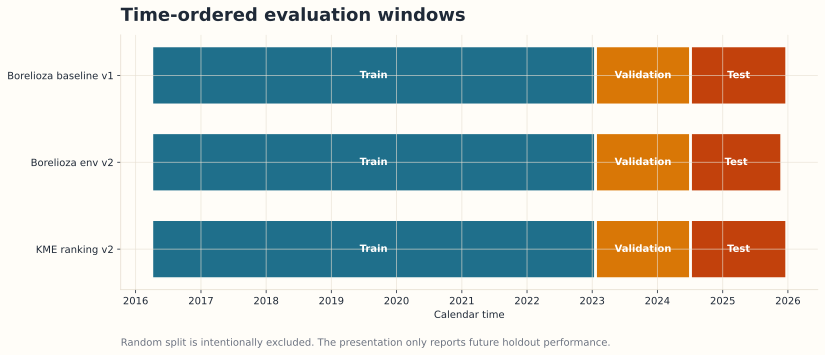
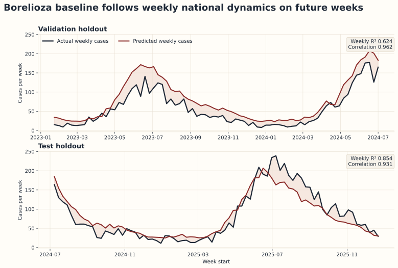
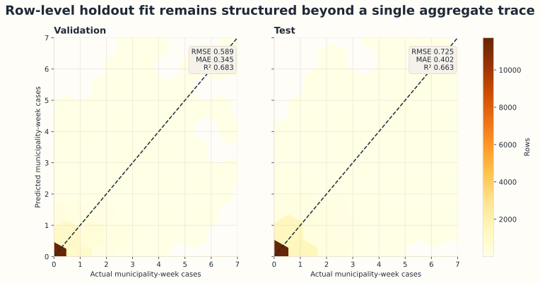
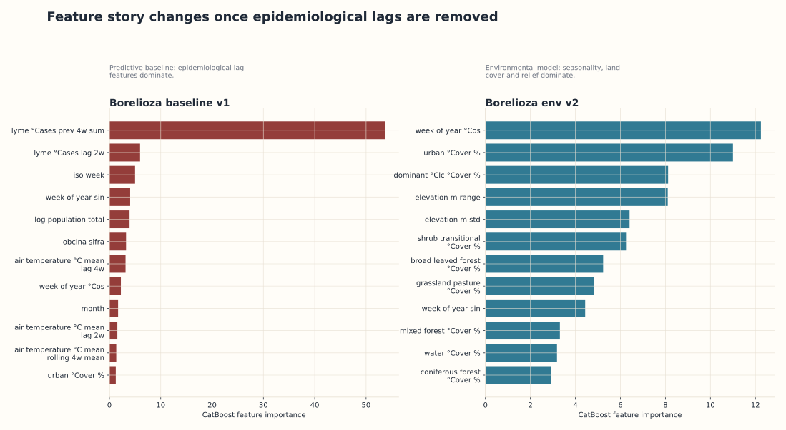
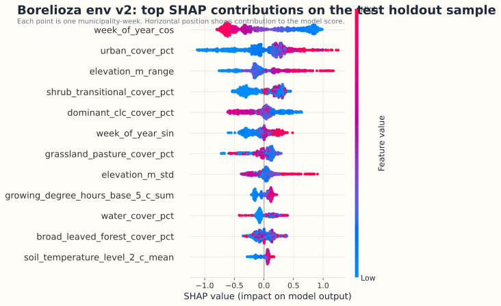
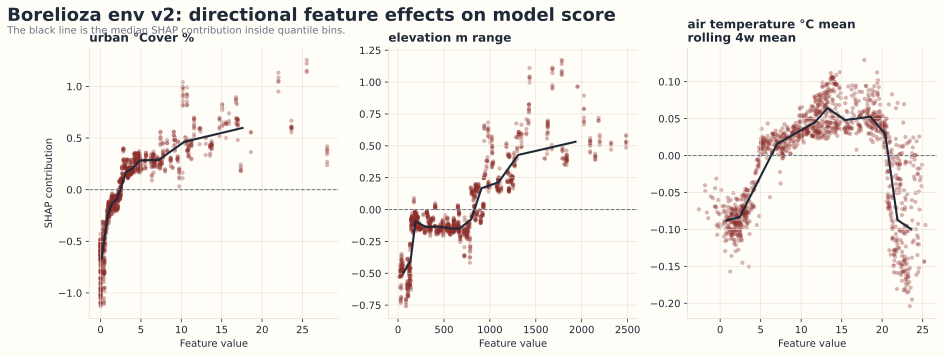
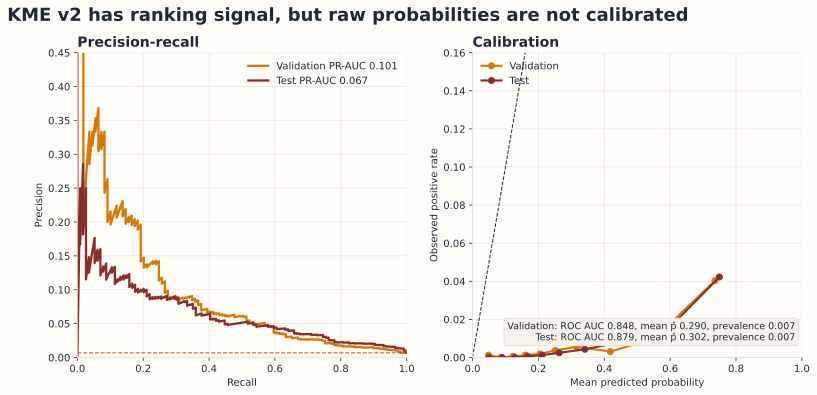
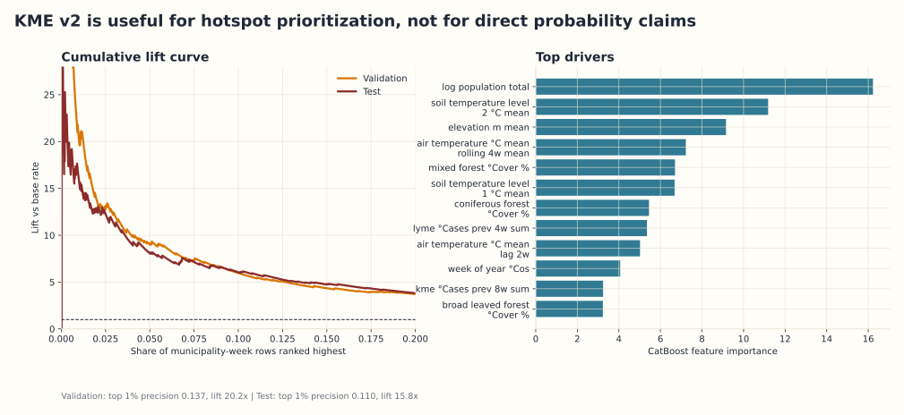

KlopPodKlopjo: data-driven tick risk modeling for Slovenia
Presentation-ready research report generated from local model artifacts, holdout
predictions and CatBoost SHAP analysis. This file is meant to be opened directly in
a browser and reused as source material for slides.
Borelioza baseline
0.663
Test R² on municipality-week rows
Borelioza baseline
0.854
Weekly national R² on future holdout
Borelioza env v2
0.812
Test ROC AUC for 4-week presence signal
KME ranking v2
15.8x
Lift in the highest-scoring 1% of rows
1. Methodology
Evaluation is time-ordered, not random

All headline results come from future holdout weeks. This is the first visual you should
show if the jury asks about leakage or overfitting.
Talking points
Training ends on 2023-01-16 for the main benchmark models.
Validation and test windows contain only future weeks.
Random split is intentionally excluded from the main story.
The same temporal evaluation protocol is reused across disease targets.
2. Borelioza baseline
The baseline tracks weekly national dynamics on unseen future data
Test RMSE
0.725
Test MAE
0.402
Weekly test R²
0.854
Weekly test correlation
0.931

Use this figure as the central proof slide. It shows that the model follows real epidemic
timing, not only isolated municipality rows.
3. Borelioza baseline
Signal persists at municipality-week resolution

Hexbins prevent the plot from collapsing into overdraw. The diagonal shows ideal fit.
How to narrate it
The model is not perfect, but the structure is clearly non-random.
Holdout error rises from validation to test, which is expected and believable.
This baseline is strong for prediction, but it is not the cleanest causal explanation model.
4. Model comparison
Predictive baseline and environmental model do not tell the same story

The left panel is excellent for prediction, but heavily supported by epidemiological lag features.
The right panel is more interpretable for an environmental risk narrative.
5. Feature effects
SHAP shows which environmental signals move the borelioza env v2 score

Beeswarm summary over a test sample. Horizontal position is contribution to the model score.

Directional SHAP plots provide the “research slide” that makes feature effects concrete.
6. KME v2
Ranking works, raw probability does not
Test ROC AUC
0.879
Test PR-AUC
0.067
Observed prevalence
0.70%
Mean predicted probability
30.2%

This is the slide that makes the story scientifically honest: useful ranking signal, poor
calibration, therefore not a literal personal probability.
7. KME v2
High-score rows are enriched with real positives

The first 1% of test rows is enriched by 15.8x versus the base rate.
This supports a hotspot-ranking use case.
How to phrase it
The model is valid for ranking municipality-week hotspots.
The model is not valid as a literal “30% probability of KME”.
Rare-event accuracy is not the main metric and should stay out of the headline.
8. Claims
What you can say clearly, honestly and confidently
Valid claims
We evaluate on future weeks, not on random rows.
For borelioza, the baseline captures weekly epidemic dynamics on holdout data.
For environmental models, seasonality, land cover and relief materially influence model output.
For KME, the prototype is useful for hotspot ranking and triage.
The municipal score is a relative risk index, not a diagnosis.
Claims to avoid
Do not claim calibrated personal disease probabilities.
Do not present KME accuracy as the main success metric.
Do not equate feature importance with biological causality.
Do not say the predictive baseline is a purely environmental model.
Do not imply the system replaces medical advice or surveillance.